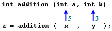
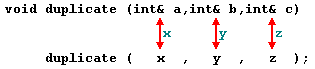

|
Section 2.3 Functions (II). |
 |
|
| |
|
Section 2.3 Functions (II). |
|
|
| |
int x=5, y=3, z;What we did in this case was to call function addition passing the values of x and y, that means 5 and 3 respectively, not the variables themselves.
z = addition ( x , y );

This way, when function addition is being called the value of its variables a and b become 5 and 3 respectively, but any modification of a or b within the function addition will not affect the values of x and y outside it, because variables x and y were not passed themselves to the the function, only their values.
But there might be some cases where you need to manipulate from inside a function the value of an external variable. For that purpose we have to use arguments passed by reference, as in the function duplicate of the following example:
// passing parameters by reference
#include <iostream.h>
void duplicate (int& a, int& b, int& c)
{
a*=2;
b*=2;
c*=2;
}
int main ()
{
int x=1, y=3, z=7;
duplicate (x, y, z);
cout << "x=" << x << ", y=" << y << ", z=" << z;
return 0;
}
| x=2, y=6, z=14 |
The first thing that should call your attention is that in the declaration of duplicate the type of each argument went followed by an ampersand sign (&), that indeed serves to specify that the variable has to be passed by reference instead of by value, as usual.
When passing a variable by reference we are passing the variable itself and any modification that we do to that parameter within the function will have effect in the passed variable outside it.

To express it somehow, we have associated a, b and c with the parameters used when calling the function (x, y and z) and any change that we do on a within the function will affect the value of x outside. Any change that we do on b will affect y, and the same with c and z.
That is why our program's output, that shows the values stored in x, y and z after the call to duplicate, shown the values of the three variables of main duplicated.
If when declaring the following function:
void duplicate (int& a, int& b, int& c)we had declared it thus:
void duplicate (int a, int b, int c)that is, without the ampersand (&) signs, we would have not passed the variables by reference, but their values, and therefore, the output on screen for our program would have been the values of x, y and z without having been modified.
 This type of declaration "by reference" using the
ampersand (&) sign is exclusive of C++. In C language we had to
use pointers to do something equivalent.
This type of declaration "by reference" using the
ampersand (&) sign is exclusive of C++. In C language we had to
use pointers to do something equivalent.
|
Passing by reference is an effective way to allow a function to return more than one single value. For example, here is a function that returns the previous and next numbers of the first parameter passed.
// more than one returning value
#include <iostream.h>
void prevnext (int x, int& prev, int& next)
{
prev = x-1;
next = x+1;
}
int main ()
{
int x=100, y, z;
prevnext (x, y, z);
cout << "Previous=" << y << ", Next=" << z;
return 0;
}
| Previous=99, Next=101 |
// default values in functions
#include <iostream.h>
int divide (int a, int b=2)
{
int r;
r=a/b;
return (r);
}
int main ()
{
cout << divide (12);
cout << endl;
cout << divide (20,4);
return 0;
}
|
6 5 |
As we can see in the body of the program there are two calls to the function
divide. In the first one:
divide (12)we have only specified one argument, but the function divide allows up to two. So the function divide has assumed that the second parameter is 2 since that is what we have specified to happen if this parameter lacks (notice the function declaration, which finishes by int b=2). Therefore the result of this function call is 6 (12/2).
In the second call:
divide (20,4)there are two parameters, so the default assignation (int b=2) is being stepped on by the passed parameter, that is 4. Being the result equal to 5 (20/4).
// overloaded function
#include <iostream.h>
int divide (int a, int b)
{
return (a/b);
}
float divide (float a, float b)
{
return (a/b);
}
int main ()
{
int x=5,y=2;
float n=5.0,m=2.0;
cout << divide (x,y);
cout << "\n";
cout << divide (n,m);
return 0;
}
|
2 2.5 |
In this case we have defined two functions with the same name, but one of them accepts two arguments of type int and the other accepts them of type float. The compiler knows which to call in each case examining the types when the function is called, if it is called with two ints as arguments it calls to the function that has two int arguments in the prototype and if it is called with two floats it will call to the one which has two floats in its prototype.
For simplicity I have included the same code within both functions, but this is not compulsory. You can make two function with the same name but completely different behaviors.
The format for its declaration is:
inline type name ( arguments ... ) { instructions ... }
and the call is just like the call to any other function. It is not necessary to
include the inline keyword before each call, only in the declaration.
n! = n * (n-1) * (n-2) * (n-3) ... * 1more concretely, 5! (factorial of 5) would be:
5! = 5 * 4 * 3 * 2 * 1 = 120and a recursive function to do that could be this:
// factorial calculator
#include <iostream.h>
long factorial (long a)
{
if (a > 1)
return (a * factorial (a-1));
else
return (1);
}
int main ()
{
long l;
cout << "Type a number: ";
cin >> l;
cout << "!" << l << " = " << factorial (l);
return 0;
}
|
Type a number: 9 !9 = 362880 |
Notice how in function factorial we included a call to itself, but only if the argument is greater than 1, since otherwise the function would perform an infinite recursive loop in which once it arrived to 0 it would continue multiplying by all the negative numbers (probably provoking a stack overflow error on runtime).
This function has a limitation because of the data type used in its design (long) for more simplicity. In a standard system, the type long would not allow to store factorials greater than 12!.
But there is an alternative way to avoid to write all the code of all functions before they can be used in main or in another function. It is by prototyping functions. This consists in making a previous shorter declaration of the complete definition but quite significant so that the compiler can know the arguments and the return type needed.
Its form is:
type name ( argument_type1, argument_type2, ...);It is identical to the header of a function definition, except:
// prototyping
#include <iostream.h>
void odd (int a);
void even (int a);
int main ()
{
int i;
do {
cout << "Type a number: (0 to exit)";
cin >> i;
odd (i);
} while (i!=0);
return 0;
}
void odd (int a)
{
if ((a%2)!=0) cout << "Number is odd.\n";
else even (a);
}
void even (int a)
{
if ((a%2)==0) cout << "Number is even.\n";
else odd (a);
}
|
Type a number (0 to exit): 9 Number is odd. Type a number (0 to exit): 6 Number is even. Type a number (0 to exit): 1030 Number is even. Type a number (0 to exit): 0 Number is even. |
This example is indeed not an example of effectiveness, I am sure that at this point you can already make a program with the same result using only the half of code lines. But this example ilustrates how protyping works. Moreover, in this concrete case the prototyping of -at least- one of the two functions is necessary.
The first things that we see are the prototypes of functions odd and even:
void odd (int a);that allows these functions to be used before they are completely defined, for example, in main, which now is located in a more logical place: the beginning of the program's code.
void even (int a);
Nevertheless, the specific reason why this program needs that at least one of the functions to be prototyped, is because in odd there is a call to even and in even there is a call to odd, reason why if none of the two functions had been previously declared, an error would have happened, since either odd would not be visible from even (because it has not still been declared), or even would not be visible from odd.
Many programmers recommend that all functions be prototyped. It is also my recommendation, mainly in case that there are many functions or in the case that these are very long, since, having the prototype of all the functions in the same place can spare us some time when consulting how to call it or even ease the creation of a header file.
| © The C++ Resources Network, 2000-2001 - All rights reserved |
 Previous:
Previous:2-2. Functions (I). |
 index |
 Next:
Next:3-1. Arrays. String of characters. |